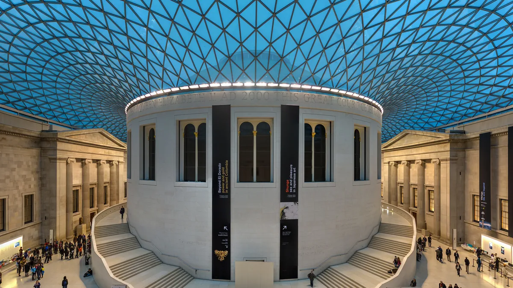

01
British Museum
MuseuGrátis
reserva recomendada; sexta até 20h30

Diliff · CC BY-SA 3.0 · via Wikimedia Commons · recortada
Entrada
Fonte: página de visita do site oficial (britishmuseum.org), consultada em 7/nov/2026: “Free entry”.
A reserva é recomendada, não obrigatória — “Advance booking recommended”, com ingresso gratuito no site. As exposições temporárias cobram à parte.
A reserva é recomendada, não obrigatória — “Advance booking recommended”, com ingresso gratuito no site. As exposições temporárias cobram à parte.
Dias e horários
Todos os dias, 10h às 17h; sexta até 20h30.
Fecha de 24 a 26 de dezembro.
Fecha de 24 a 26 de dezembro.
Onde fica